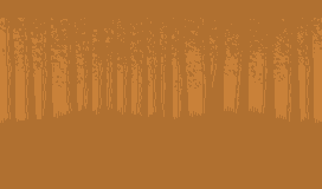
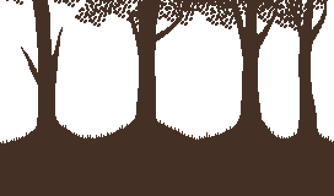
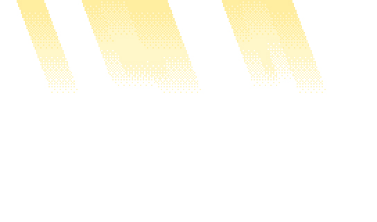
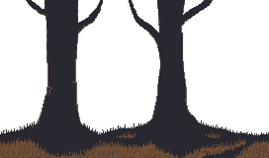
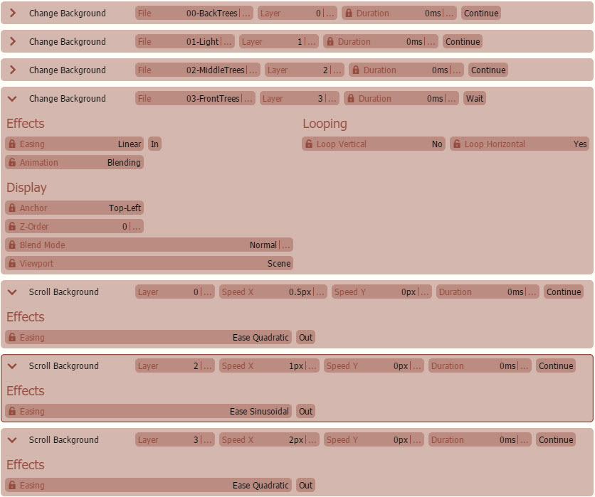

视差滚动
P视差滚动是一种视觉技术，其中图像的层以不同的速度移动，以创建深度感。
准备工作
首先，所有图像必须分成层，并以不同的速度移动。这包括前景、中景和背景。

背景移动速度最慢。

中景移动速度将在前景和背景速度之间。

以及这个另一个中景不移动。

前景移动速度最快。
重要的是要记住，图像必须是为“循环”而创建的。这意味着如果你将图像并排放置，它仍然看起来是无缝的。
实施

就这样！您可以使用完全相同的命令创建以下视觉效果！